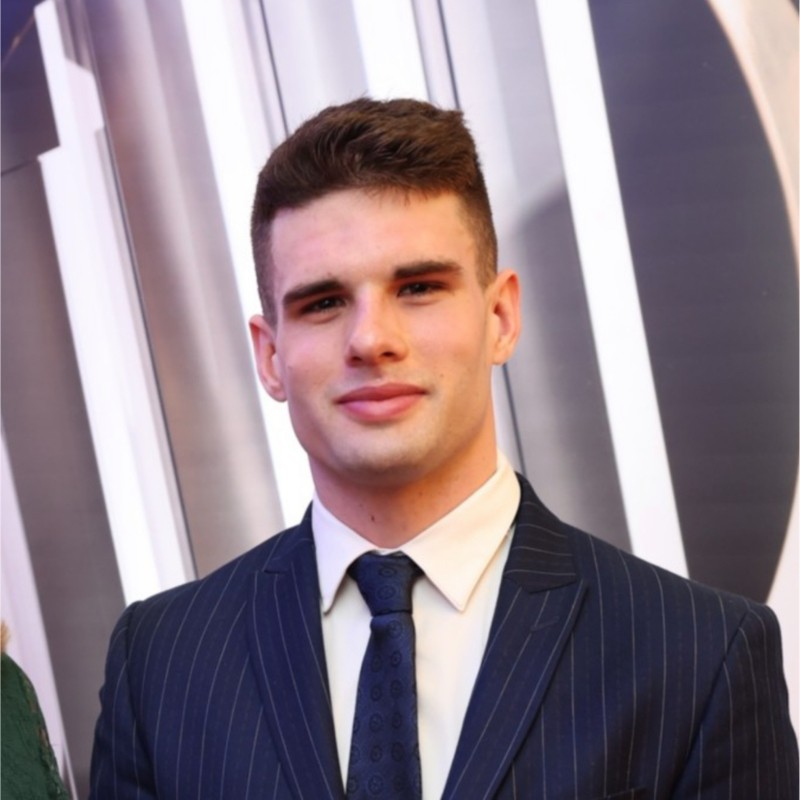

About
Imperial MSc Advanced Computing graduate, looking for systems, forward-deployed or solutions engineering roles in London, Amsterdam or Prague.
I finished my MSc in Advanced Computing at Imperial in September 2026 and have since co-authored a paper submission to EuroSys '27. At Imperial I was introduced to eBPF and DPDK and found them interesting enough to build my thesis around them. AccNet lets an unmodified application use a kernel-bypass network stack: eBPF intercepts its socket system calls and hands the data to a DPDK transport.
Before Imperial I did my BSc in Computer Science at VU Amsterdam, with an exchange semester at the Hong Kong University of Science and Technology. I spent three summers at MicroStep in Bratislava, the first on data analysis and the next two writing software for CNC machine automation. That meant working with people across several departments, and I liked it.
Outside work I play 7-a-side football and have recently taken up tennis. I like organising trips with friends, and I'm planning to start learning a new language next.

- Based in
- Amsterdam, Prague
- Open to
- London, Amsterdam, Prague
- Citizenship
- EU (Slovak)
- UK status
- Eligible for Graduate Visa
- Languages
- Slovak, English, Czech
Roles I'm looking for
Systems engineering
I've always liked building systems and making them faster. On AccNet I built the eBPF interception layer and modified Machnet, the DPDK transport underneath it, and that's when I knew networking and infrastructure was what I wanted to keep working on. It also showed me how much there is still to learn in this field, and I want to spend the next few years doing exactly that.
Forward-deployed engineering
In addition to my technical skills, I like working and communicating with people, and I thrive in quickly changing environments. I’m outgoing, and I’d be just as happy embedded in a customer’s team, working through problems with them directly. Because of this, I feel a forward-deployed engineering role is the right fit for me. During my internships at MicroStep I worked with multiple departments to solve problems and create solutions. For example, I built a tool that automated EtherCAT configuration and cut setup time by about 80%, working with the real-time department, the hardware department and the team responsible for digitalising the machines’ EtherCAT connections.
Solutions engineering
I enjoy working directly with customers and designing new solutions for complicated problems. I also like explaining technical trade-offs to the people who have to make the decision. Because of this, I feel a solutions engineering role would be a good fit for me. While building AccNet, I was always thinking about the user. Kernel bypass is fast, but most people don’t want to rewrite their application to use it, so the goal was to make it work without them having to change anything. I think that’s the same way a solutions engineer has to think about a customer’s system.
Stack
Languages
- C
- C++
- Python
- Java
Kernel and networking
- eBPF: cgroup hooks, ring buffers, the verifier
- DPDK and kernel-bypass transports
- Linux kernel modifications and kfuncs
- Shared-memory IPC
- Socket programming, TCP/IP internals
Tooling
- Linux, custom kernel builds, gdb
- Docker, Kubernetes, Azure
- git, GitHub Actions, unit testing
- PostgreSQL, REST APIs
- angr, static analysis